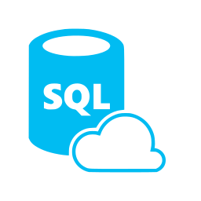
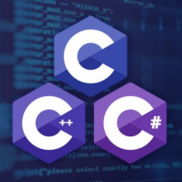
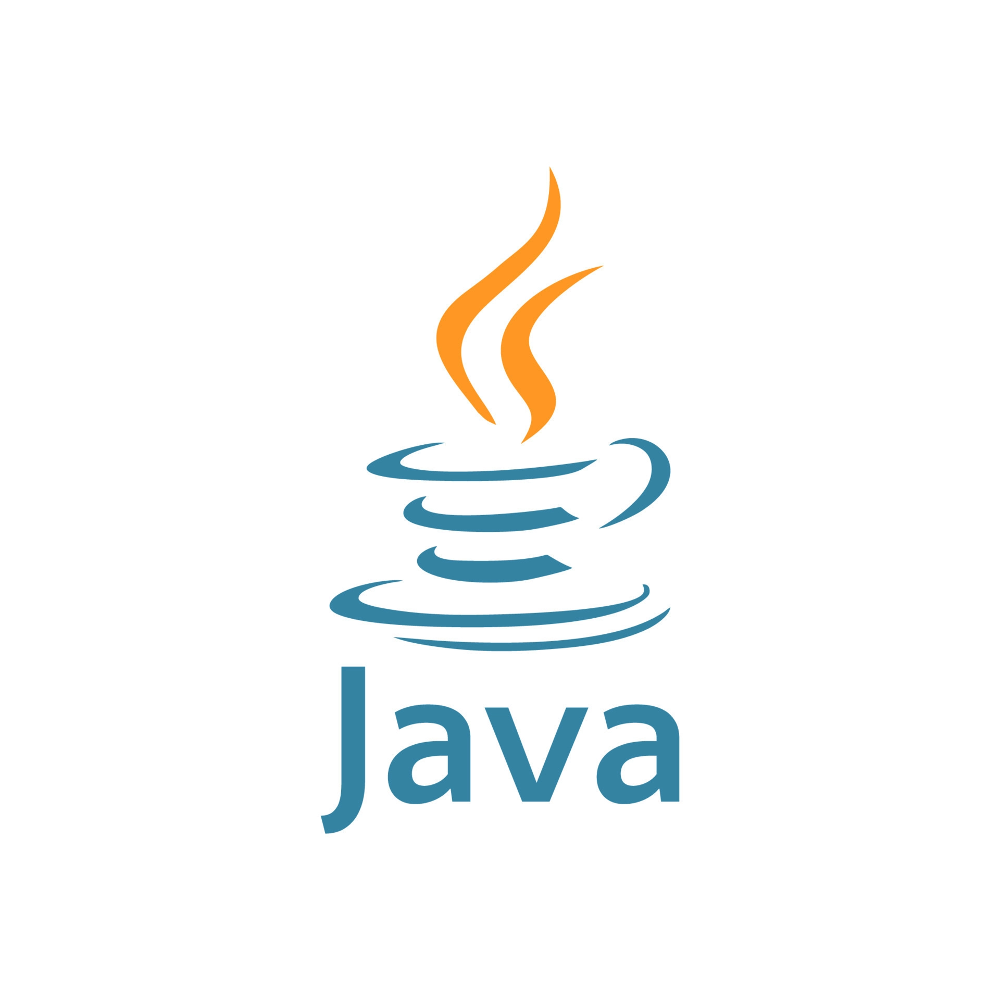
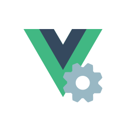

PROJELERİM
Burada şimdiye kadar yaptığım projelerim ve onlarla ilgili açıklamalar yer almaktadır.
BİLDİKLERİM
Bu kısımda ise sahip olduğum yazılım bilgilerimi ve bu bilgilerle ilgili detayları anlattım.
-

HTML , CSS
2015 - Günümüz
HTML/CSS bilgisini uzun zamandır tecrübe ediyorum. Çünkü ben liseyi de 10. sınıftan itibaren web tasarımı üzerine okumuştum ve daha o yıllarda bize ilk öğrettikleri şey html/css bilgisiydi. Dolayısıyla uzun zamandır bu ikiliyi öğreniyorum, tecrübe ediyorum ve hâlen bu süreç devam etmektedir. Çok sonraları bazı araştırmalar yapıp javascript framework'lerinin çalışma mantığını öğrendiğimde html ve css bilgimin yalnızca web tasarımıyla sınırlı kalmayacağını anladım. Çünkü artık html / css / javascript üçlüsünü kullanarak çeşitli framework'ler aracılığıyla hem mobil hem masaüstü hem de web uygulamaları yapabildiğimiz gibi, farklı işletim sistemlerinde çalışabilecek uygulamalar yapılabildiğini öğrendim. Eskiden ben html ve css bilgisini edindiğimde bunun sadece web tasarımı için işime yarayacağını, mobil ve masaüstü uygulamalar yapmak konusunda işime yaramayacağını düşünürdüm, Allah'a şükür bu düşündüğüm olmadı, html ve css'in kullanım alanı artık javascript framework'leri sayesinde çok genişledi ve bu bilgilerimizi artık hem mobil hem masaüstü hem de web alanında kullanabiliyoruz. Bu bilgileri edinirken içimde ukte kalan tek şey bu bilgileri elde etmek için bir kurs üzerinden gitmemek oldu. Çünku o sıralar her türlü yazılım bilgisiyle ilgili internette kurslar olduğunu bilmiyordum ve kurs videolarını izleyerek sıralı ve sistemli bir şekilde not almak da o sıralar aklımda yoktu, ayrıca dersler, sınavlar bizi çok oyalıyor, bunu düşünmeye fırsat vermiyordu. Bu yüzden benim html ve css ile ilgili oluşturduğum çalışma dosyalarım diğer çalışma dosyalarım gibi düzenli, sıralı ve sistematik değildir.
Çalışma Sayfalarımın Github Repository'si için tıklayın -

SQL Dilini ve Veritabanının Mantığını Öğrenmem
2022 - Günümüz
Benim Sql ile ilk tanışmam yine bir ders aracılğıyla olmuştu. İlk defa veritabanı dersinde hocamız bizden Sql veritabanını kullanarak bir proje yapmamızı istemişti. Ben fırsat bu fırsat diyerek ilgili projeyi hocanın da anlatımları doğrultusunda SSMS (Sql Server Management Studio) programının tasarımsal arayüzü üzerinden yapmaya başladım. Proje süresince baya bilgi edinmiştim. Mesela ilişkisel veritabanı mantığı, referans alan, anahtar alan, veri tipleri, sorgu mantığı, sütun/satır/tablo mantığı, bir sütuna yazılacak değeri maskelemek, sütunlara yazılan değerlerle çeşitli hesap işlemleri yapıp ortaya yeni bir tablo çıkartmak, "Generate Script" komutunu kullanarak tasarım arayüzü üzerinden yaptığımız veritabanının Sql kodu dökümünü elde etmek vb. birçok tecrübe edinmiştim. Bu tecrübelerimi iyice pekiştirmek için de projemi detaylı yapmış, hocanın istemediği , talep etmediği şeyleri bile eklemiştim. Dolayısıyla ben artık Sql veritabanlarına aşina olmuştum ama bu yetmezdi, Sql'i teferruatlı şekilde anlamak için bir kursa ihtiyacım vardı, bunu hissediyordum. En sonunda yine veritabanı kullanmak zorunda kaldığım bir dersin de vesilesiyle kendime internetten bir kurs buldum. Bu kurs üzerinden Sql öğrenmeye devam ediyorum.
Çalışma Sayfalarımın Github Repository'si için tıklayın -

C, C++, C# Dillerini ve Programlama Mantığını Öğrenmem
2022 - Günümüz
Ben bu dillerin aşinalıklarını ilk defa "C Programlama" dersini geçmek için edinmiştim. O zamana kadar herhangi bir programlama dili bilmiyordum, programlama dilinin mantığını, nasıl işlediğini de bilmiyordum. C Programlama dersinde baktım ki sürekli programlama bilgileri öğretiliyor lakin bu konu detaylı, sıralı ve düzenli şekilde öğrencilere yedirilmiyor. Bundan dolayı ben de konuları derste anlayamıyordum ve kendimi suçluyordum. işte o zaman bu C dersini iyi bir notla geçmek için ve artık programlama mantığını da çözmek için internette bir kurs arayışına giriştim. En sonunda direkt olarak C dersini anlatmasa da C# dilini baya detaylı, sıralı, düzenli ve teferruatlı anlatan, öğrenciye programlama dili konusunda istemediği kadar bilgiyi yediren bir online kurs buldum. Bu kursun videolarını izleyip, konularını anlıyordum ve yazdığım kodları C# sözdizimi(syntax) ile değil, C sözdizimi ile yazıyordum çünkü dersimiz ve sınavlarımız C üzerineydi. İşte böyle böyle bir programlama dilindeki fonksiyonları, döngüleri, değişkenleri, ifadeleri, veri tiplerini ve buna benzer tüm temel programlama bilgilerini çözdüm. Yani ilk defa programlama dillerinin mantığını C# ve C üzerinden çözmüştüm ve bu yazılımda hayatımın dönüm noktası olmuştu. C# kursu izleyip o kurstan anladıklarımı DevC++ IDE'si üzerinden C koduyla yazıyordum. Ben bu C kodunu DevC++'da yazarken bazen .c uzantılı dosyalarda , bazen de .cpp uzantılı dosyalarda yazıyordum. Bunun tuhaf olduğunu farkedip üniversitedeki hocama durumu sordum ve .c uzantısının asıl C dili kaynak dosyası olduğunu, .cpp uzantılı dosyaların aslında C++ kaynak dosyası olduğunu öğrendim. İşte o zaman C ailesinin ne kadar birbirine benzediğini, birbiriyle uyumlu olabildiğini ve aslında onlardan bir tanesinin mantığını çözünce diğerlerinin de çözüldüğünü anladım. Daha sonraları sınıfta Java dili üzerinden gördüğümüz "Nesne Tabanlı Programlama" dersini hem yüksek notla geçmek hem de bu mantığı anlamak için yaptığım araştırmalar sonucunda Java üzerinden Nesne Tabanlı Programlama mantığını da öğrendim. Bunu öğrendikten sonra eskiden öğrendiğim C dili hariç, C++ ve C# dilllerinin de Nesne Tabanlı Programlama kısmı olduğunu, bu mantığın yazılım dünyası tarafından sıklıkla kullanıldığını, işleri baya basitleştirdiğini, bu olmadan işlerin daha düzensiz, komplike ve zor olduğunu hem tecrübe ettim hem de gördüm. İşte tüm bu sebeplerden dolayı ben C, C++ ve C# dillerini bildiğimi söylüyorum. Çünkü ben artık hali hazırda programlama mantığını da, nesne tabanlı programlama mantığını da biliyorum. C# ve C kodunu yazmaya da aşinayım, bu dilleri kullanarak konsolda çeşitli uygulamalar da yaptım. Bu dilleri öğrenmem istenirse yapacağım tek şey C ailesinin kendisine has olan bazı yapılarını, kütüphanelerini öğrenmek, sözdizimine iyice alışmaktır, bunları çözmek de çok kısa sürer.
-

Sass/Scss
2022 - Günümüz
İzlediğim bir internetteki web tasarımı kursunda karşıma Sass/Scss kavramı çıktı, daha önce bu kavramı bir de fron-end iş ilanlarında görmüştüm. Araştırdığımda bunun bir Css ön işlemcisi (Css preprocessor) olduğunu, bu ön işlemci sayesinde Css'in bir programlama dili gibi kullanılabildiğini, bunu bilmemin Css'i çok daha fonksiyonel, işlevsel ve yönetilebilir şekilde kullanmamı sağlayacağını gördüm. Bu bilgiyi de edinmek için internette bir kurs buldum, çok geçmeden o kursu da tamamen bitirdim. Kurstan sonra elimde kurs boyunca yaptığım uygulamaları ve o uygulamalarla ilgili aldığım notları içeren çalışma dosyaları oluştu.
Çalışma Sayfalarımın Github Repository'si için tıklayın -

Bootstrap 5
2022 - Günümüz
Bootstrap kavramını da ilk defa iş ilanlarından ve internetteki bir web tasarım kursundan gördüm. Yine ilk başta bir web tasarımı kursundan bootstrap 5 kütüphanesi ile ilgili bazı bilgiler edindim ve bazı uygulamalar yaptım, lakin bu bilgiler bootstrap'ı önemli ölçüde öğrenmek için yetersizdi, ayrıca o kaynak sıralı ve düzenli bir anlatım da yapmıyordu. Ben de internetten "bootstrap dersleri" ,"bootstrap kursu" diye aramalar yaptım, en sonunda kafama yatan bir kurs buldum. Bu kurs bootstrap'ın en son sürümü olan Bootstrap 5'i anlatıyordu ve anlatımı da gayet düzenli, sıralı ve açıktı, konuları atlamıyordu. Üniversitemin yaz tatilinde bu kursu da binbir emekle bitirdim ve o süreçte bootstrap 5'in tüm önemli bileşenleri, yapıları ile ilgili detaylı çalışma sayfaları çıkarttım. Çünkü bilgiler çoktu, karmaşıktı ve hepsini aklımda tutmam mümkün değildi, ayrıca ben hayatımda ilk defa bootstrap gibi karmaşık bir yapıyı, bir kütüphaneyi deneyimliyordum. Böyle önemli bilgileri ve tecrübeyi yalnızca kafamda tutamazdım, ne zaman bir yapıyı, bir bileşeni unutsam anında bazı örneklere bakıp unuttuğum şeyi hatırlayabilmem gerekiyordu. Yoksa belkide bir şeyi unutmam, saatlerce araştırmaya sebep olacaktı. işte bunun için çalışma sayfalarını oluşturmuştum ve bu adetimi , bootstrap 5 kursundan sonra devamlı hâle getirdim. Bundan sonra artık ne zaman ki bir yazılım bilgisini edinmek için sıralı ve detaylı anlatan bir kurs üzerinden gidersem o kursta gördüğüm her şeyi çalışma sayfalarında uygulayacak ve altlarına bu uygulamayı nasıl oluşturduğumu not alacaktım.
Çalışma Sayfalarımın Github Repository'si için tıklayın -

Javascript
2022 - Günümüz
Javsascript dili front-end veya web tasarımı söz konusu olduğunda benim hep duyduğum bir programlama diliydi. Özellikle web tasarımından bahsedilirken vazgeçilmez üçlü html/css/javascript üçlüsüydü, hâlâ daha öyle. Javascript'i de yine internetteki web tasarımı kurslarından, iş ilanlarından, sosyal medyadan sıklıkla görmüştüm. Neden bu kadar popüler olduğunu sorgulayınca bu dilin ilk başta basit bir dil olarak tasarlandığını, sonradan karmaşık projelerde kullanılmaya başlandığını ve hızlı, dinamik yapısı sebebiyle yazılım dünyasının yeni gözdesi olduğunu gözlemledim. Öyle ki, javascript front-end alanının ve web tasarımımının vazgeçilmez bir unsuru olmuştu. Bu programlama dilini sırf daha etkili, daha fonksiyonel yazmak için farklı firmalar tarafından ön işlemciler oluşturulmuştu. Yine javascript referans alınarak farklı firmalar tarafından Angular, React, Vue gibi front-end framework'leri ve NodeJs gibi back-end framework'ü ortaya çıkarılmıştı. Bu fremework'ler yazılım şirketleri tarafından da yoğun olarak kullanılıyor ve yazılımcıların bunu öğrenmesi de isteniyordu. Kısacası javascript front-end dünyasını bize açan anahtardı, işte bunun için üniversitemin yaz tatilinde Sass/Scss ve Bootstrap konularını bitirdikten hemen sonra javascript kursu aramaya başladım. En sonunda aklıma yatan bir kursu udemy üzerinden buldum, bu kursun eğitmeni eğitimi ingilizce olarak veriyordu. Benim ise ingilizcem zaten vardı, ingilizce okuma, yazma, konuşma, anlama benim yapabildiğim bir şeydi. Durum böyle olunca kursu ingilizce olarak dinlemeye ve oluşturacağım çalışma sayfalarında yazdığım notları da ingilizce olarak yazmaya başladım ve o kursu da önemli ölçüde bitirdim, lakin çok detaylı bir kurs olduğu için hâlâ o aldığım kurs devam ediyor.
Çalışma Sayfalarımın Github Repository'si için tıklayın -

Java Dili ve Nesne Tabanlı Programlama Mantığını Öğrenmem
2022 - Günümüz
Java dilini taa lisedeyken bile duymuştum, İngilizce hocamız Java dilini bilen insanların Türkiye'de çok az olduğunu bize söylemişti , ayrıca ben eskiden telefonda oynadığım oyunları açarkende hep java simgesini görüyordum. Java kendisinden bir şekilde bahsettiriyordu. En sonunda üniversitede Nesne Tabanlı Programlama dersi karşımıza çıktı. Biz bu dersi Eclipse IDE'si üzerinden Java programlama diliyle öğreniyorduk. Allah'a şükür ki bu sefer dersi derste anlayabilmiştim ve hocamız gayet konuyu güzel anlatmıştı, üstüne ben de bu mantığı anlamak için yoğun bir çaba sarfediyor, anlatılmayan konuları, detayları ayrıca kendimi geliştirmek ve nesne tabanlı programlama (OOP) mantığını kafamda tam oturtmak için öğreniyordum. Sonunda bunu da öğrendim. Artık class, interface, inheritance, extends, implements, constructor, access modifiers, abstraction, polymorphism gibi tüm önemli nesne tabanlı programlama kavramlarına da hakimdim. Ardından bu edindiğim bilgilerle de bütün java ve nesne tabanlı programlama bilgilerimi kullandığım kapsamlı, komplike bazı konsol uygulamaları yaptım.
Çalışma Sayfalarımın Github Repository'si için tıklayın -
Git ve Github
2023 - Günümüz
Artık ben Html, Css, Javascript, Sass/Scss , Java, C, C++, C#, Bootstrap 5 gibi yazılım bilgilerine sahiptim ve bu bilgilerimle çeşitli projeler de ortaya çıkarmıştım. Lakin hem benim kendimde eksiklik olarak gördüğüm hem de sürekli iş ilanlarında bizden istenen bir bilgi vardı ki o da git, github kullanım bilgisi, yani sürüm kontrolü bilgisiydi ve bu bilgiyi edinmek için öyle kurs izlemeye falan da gerek yoktu, bu bilgi küçük fakat yazılımda önemli konumu olan bir bilgiydi. Ben de bu bilgiyi edinmek için 2 tane videoyu referans alarak hemen öğrendim, bu fazla uzun sürmedi. Uzun süren kısmı projelerimi github mantığına ve arayüzüne uygun şekilde entegre etmek, repository'lere mantıklı isimler bulmak ve her bir repository'nin ne işe yaradığını anladan .md uzantılı sayfaların kullanımını öğrenmekti, bu .md uzantılı sayfaları düzenlemekti. Neyseki yoğun çabalar sonucunda bunu da başardım. Başardığımın kanıtı da github profilimdir.
Github Profilim İçin tıklayın -

Typescript
2023 - Günümüz
Şimdi gelelim Typescript bilgime... Ben typescript kavramını özellikle front-end alanında yazılımcı arayan firmaların iş ilanlarında gördüm. Bu kavramı ilk araştırdığımda javascript ile alâkası olduğunu öğrenmiştim. Ardından aradan bir süre geçti, ben bazı başka yazılımlarla ilgilendim ama bu typescript'i öğrenmek hep aklımdaydı. Çünkü firmalar bunu istiyordu, ilanlarda sürekli karşıma çıkınca typescript nedir diye araştırmaya başladım. Araştırma sonucunda typescript'in javascript'i daha fonksiyonel ve etkili kullanmayı sağladığını, derleme zamanı hatalarını gösterdiğini, nesne tabanlı programlama işlevlerini ve statik veri tiplerini tam olarak javascript için sağladığını anladım. Ayrıca anlamıştım ki typescript bir javascript ön işlemcisi (preprocessor) idi. Nasıl ki daha önce öğrendiğim Sass/Scss nasıl bir Css ön işlemcisi ise, typescript de aynı öyle bir javascript ön işlemcisi idi. Yine nasıl ki tüm css kodları scss sayfasına yazılabiliyorsa ve çalışıyorsa, tüm javascript kodları da typrescript sayfasına içine yazılabiliyor ve çalışıyordu. Yani typescript'in kendisine has, öğrenme süreci gerektiren özel bir dili de yoktu, tamamen javascript ile uyumlu çalışıyordu. Typescript'in önemini işte o zaman iyice kavradım. Ardından typescript için öğretici kaynaklar buldum ve bu bilgiyi edinmeye çalıştım. Bu esnada yine bir sürü hatayla, meseleyle ve sorunlarla karşılaştım ama bunların da üstesinden geldim.
Çalışma Sayfalarımın Github Repository'si için tıklayın -

Vue Framework
2023 - Günümüz
Ben javascript referans alınarak yapılmış framework'leri çok duyuyordum, internette, iş ilanlarında, forumlarda, stackoverflow'da alâkalı/alâkasız sürekli karşıma çıkıyordu. Angular, React, Vue ve NodeJs gibi popüler js framework'lerinin ismini ister istemez duyuyordum. Çünkü bu framework'ler artık o kadar kullanılır olmuş ve popülerlik kazanmıştı ki firmalar iş ilanlarında bunları bilmeyi ya direkt şart koşuyorlardı ya da "bilseniz iyi olur" diyorlardı. Bu kadar talebi görünce ben ilk başta framework'lerin ne olduğunu, ne işe yaradığını, neye çözüm getirdiğini araştırdım. Bulduğum sonuç ise bu framework yapılarının daha önce edindiğim tüm bilgilere göre daha karmaşık,bir sürü bileşeni içeren hazır bir yapısının olduğuydu. Bu yapı beni bootstrap 5 yapısından sonra en şaşkına çeviren yapıydı. Bu framework'lerden proje oluşturduğumda ise ortaya karmaşık, iç içe geçmiş ve çok yer kaplayan boş bir proje ortaya çıkıyordu. Oluşan projeye tek bir kod yazmasam bile projeyi oluşturduğumda gelen hazır yapılardan, bileşenlerden dolayı o boş projenin boyutu 250 megabayt'ı geçebiliyordu. Bundan dolayı hem bu yapıya alışmak hem kafamdaki soru işaretlerini gidermek hem de kendimi geliştirmek için bu framework yapılarını öğrenmeye karar verdim. İşe birilerinin de vesilesiyle Vue js ile başladım, onunla ilgili birkaç günlük kurs araştırması yaptıktan sonra kafamdaki kursu buldum ve onun üzerinden eğitim almaya başladım. Halihazırda Vue'yu öğrenmeye devam etmekteyim...
Çalışma Sayfalarımın Github Repository'si için tıklayın -
Devamı gelecek...